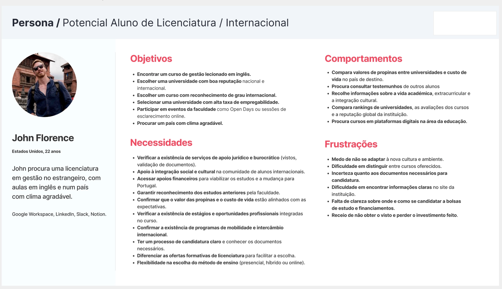
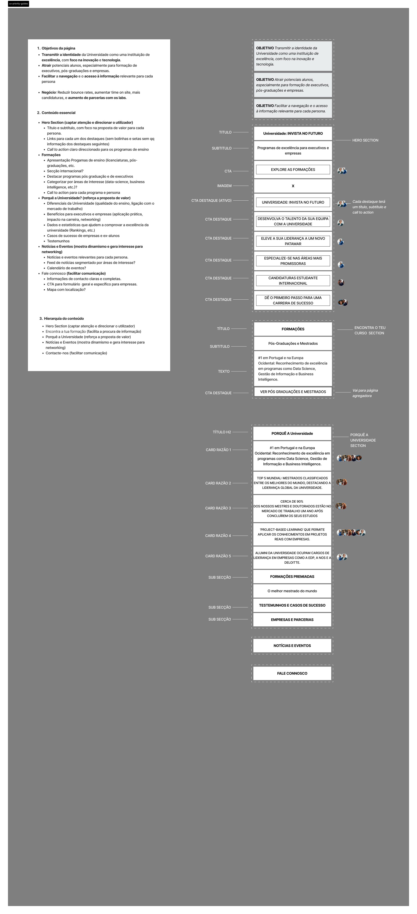
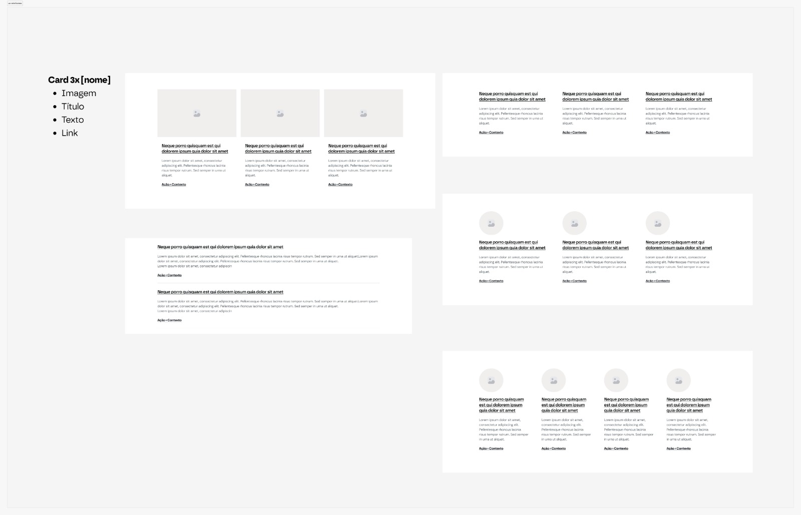
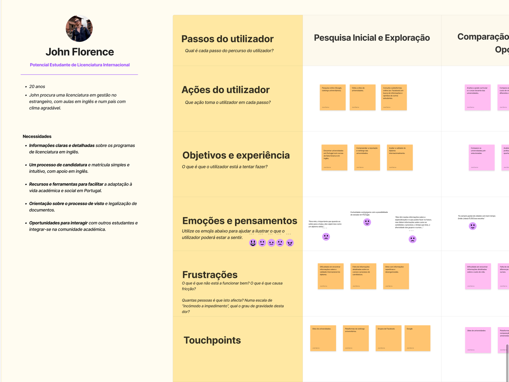
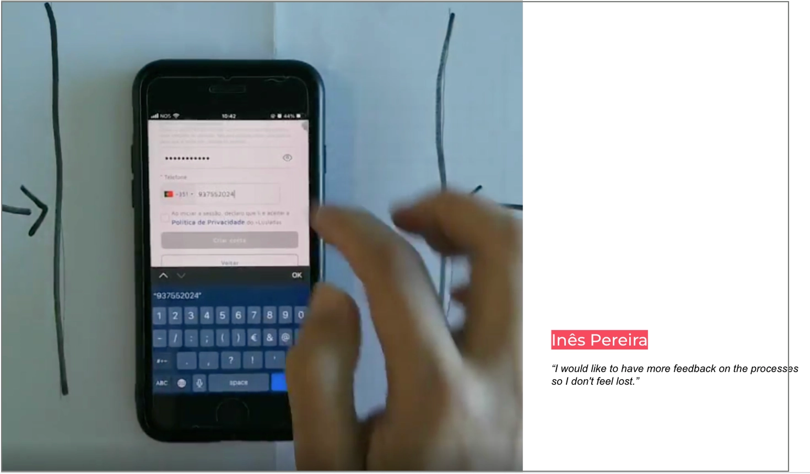
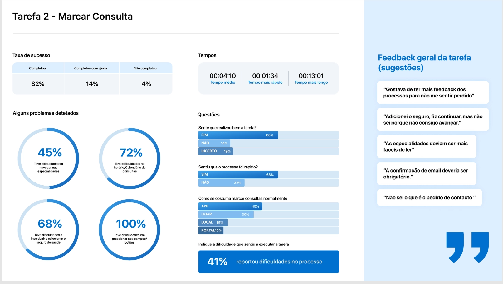

Higher Education
Strategy & Product
Architecture
Challenge
A higher education institution needed to redefine its digital priorities before investing in a redesign. The question was not aesthetic: it was understanding who the priority users were, how they made decisions, and where the real friction points were blocking applications.
My goal was to transform that uncertainty into an actionable product structure.

My Role
- User and stakeholder interviews
- Proto-personas and behaviour-based personas
- Journey mapping by user type across the acquisition funnel
- Priority guides and content structure definition
- Block wireframes and information hierarchy
- KPI definition and strategic roadmap

Discovery &
Research
The biggest risk was not in the visual interface, but in the lack of clarity during the comparison and application phases, which led to drop-off before the final decision. This finding redirected the investment: instead of starting with visuals, we started with structure and content priority.
Seven personas built from behavioural patterns, covering domestic and international candidates at different stages of the decision journey. Journey maps for each user type revealed the exact moments of friction and drop-off across the acquisition funnel.

Design Decisions
I translated insights into priority guides: a definition, per screen type, of what content appears, in what priority and reading order. The bridge between research and design.
Each priority decision addressed a friction point identified in the journey, with hierarchy designed for linear reading and assistive technologies from the very first decision.
From priority guides, I defined the structure in block wireframes: composition, hierarchy and content grouping for each template. Focus on information architecture and semantic order, not visual finish. The final visual execution was developed in collaboration with the design team, built on this structure.


Outcome & Impact
- Clear segmentation of priority users
- Prioritised journeys across the acquisition funnel
- Priority guides and content structure per template
- Block wireframes with defined hierarchy and semantic order
- Decision framework and metrics baseline for post-implementation evaluation
- These artefacts defined feature priorities and the roadmap before any interface decision or development investment
Mini-case
Usability Testing
in a Real Context: Health
Context
A private hospital's mobile application with critical onboarding and registration flows.


What I did
- In-person usability tests
- Real mobile context
- Direct observation of errors, hesitations and abandonment
Main problems
-
Missing feedback at critical moments
-
Loss of orientation during flows
-
High error risk during validation steps
Results
Critical task (booking an appointment) identified with an 82% success rate before redesign. Key issues documented with direct evidence to prioritise fixes.